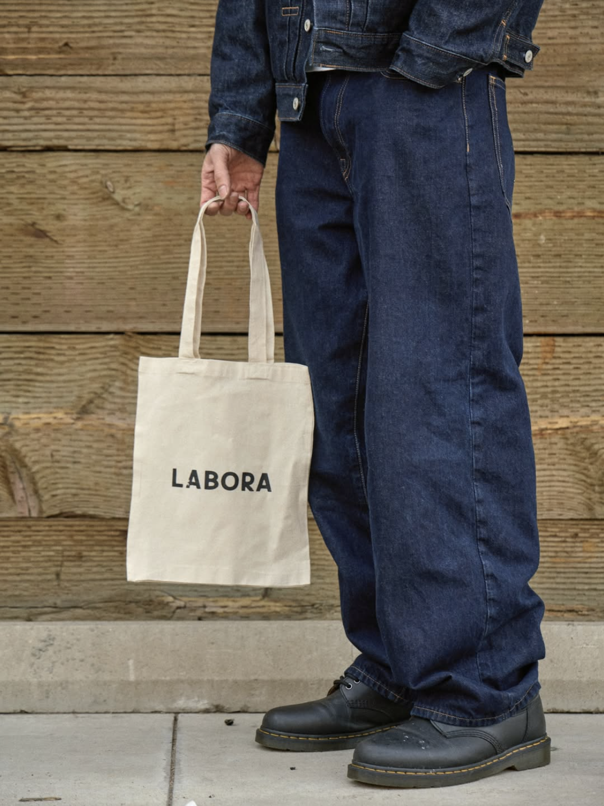
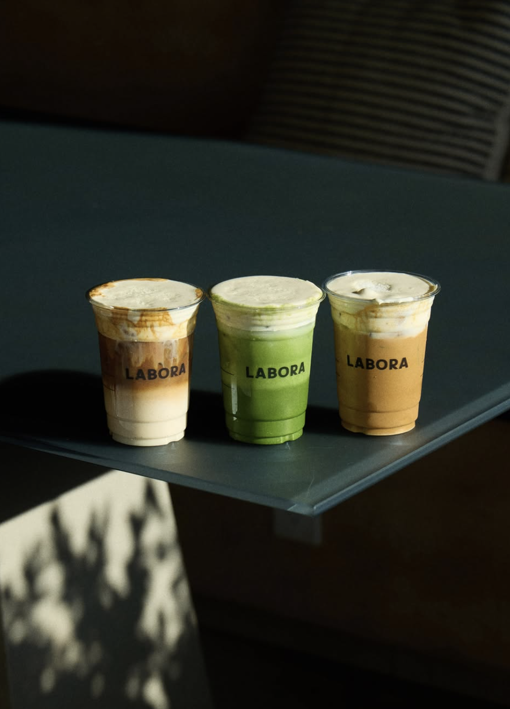

WORK IN QUIET LUXURY,
DISTILLED IN COFFEE
To work. To savor.
Labora is derived from the Latin word meaning ‘to work.’ At our core, Labora Café is a tribute to the quiet rituals of early mornings and late-night grinds.
Rooted in San Diego, we pride ourselves on our delicate, slow-dripped Vietnamese coffee and premium ceremonial-grade matcha, crafted with both patience and intention.


A letter from our founders:
Welcome to Labora!
As San Diego natives, we are deeply proud to share Labora with our community. Our mission is to provide luxury, quality drinks that enrich your daily rituals while creating a co-working space designed to spark productivity and inspire creative thinking.
Labora is more than a café, it’s a place where thoughtful craftsmanship meets a spirit of connection, and where every detail is meant to elevate both your work and your moments of pause.
We are honored to welcome you into our space and hope it becomes a home for your ideas, your focus, and your inspiration.
Best regards,
Bao Doan & Lauren Thiemthat

About Our Matcha
Our matcha is crafted from first-harvest tea leaves grown in Kyoto and Kagoshima, two of Japan’s most respected tea regions. The leaves are shade-grown, carefully selected, and slowly stone-milled to preserve their natural color and character.
Kyoto brings depth and gentle umami, while Kagoshima adds freshness and clarity. Together, they create a matcha that is smooth, balanced, and quietly expressive.
Each batch is blended with care to highlight harmony over intensity, allowing the matcha to unfold gradually on the palate. You’ll notice a naturally creamy texture, low bitterness, and a lingering sweetness that makes it versatile enough for daily rituals or slow, intentional moments.